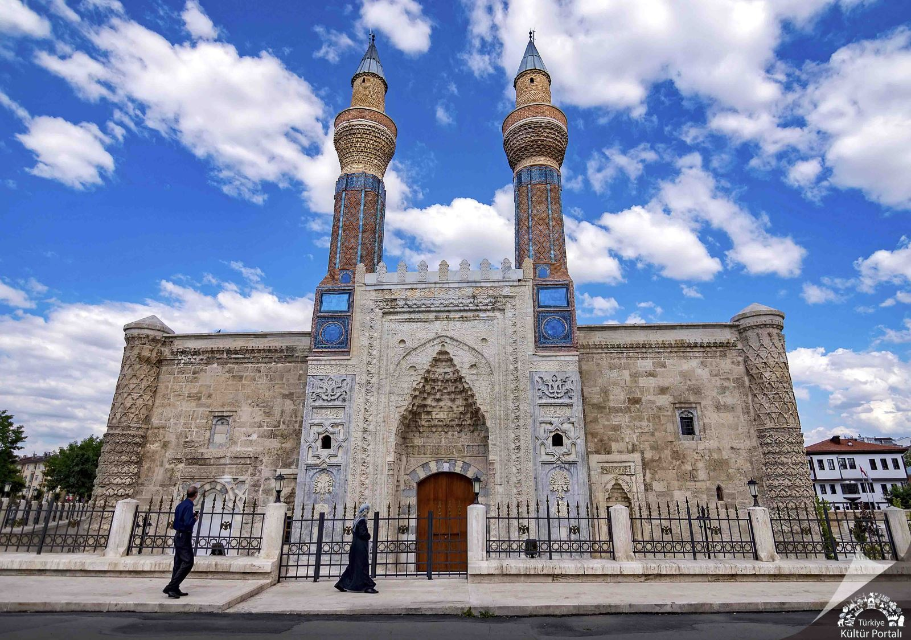
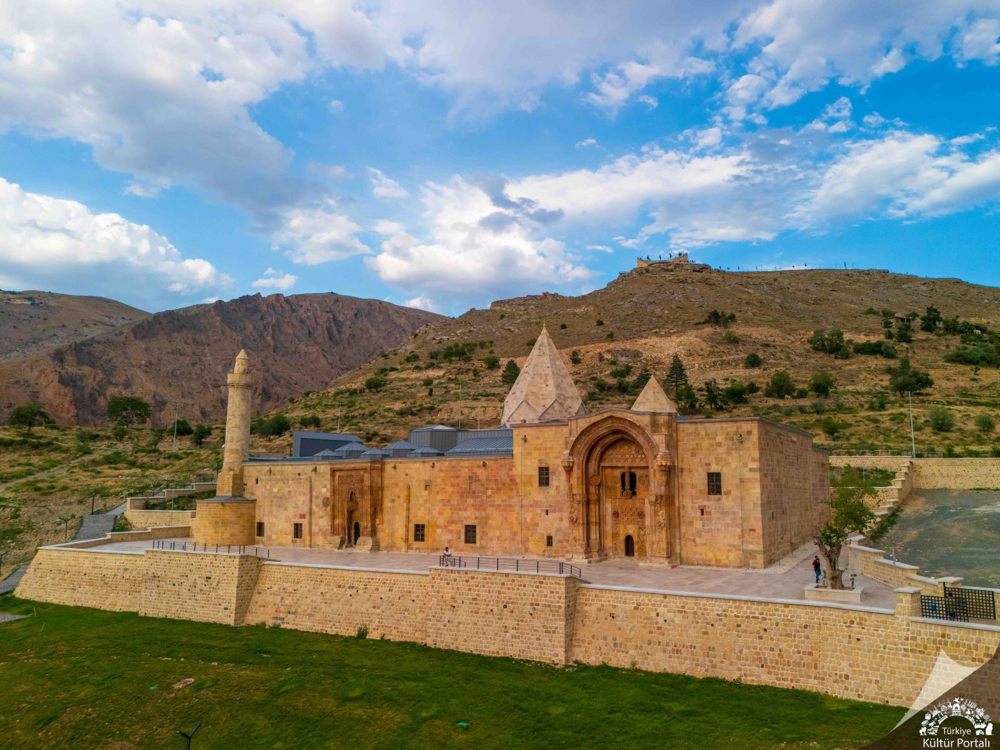
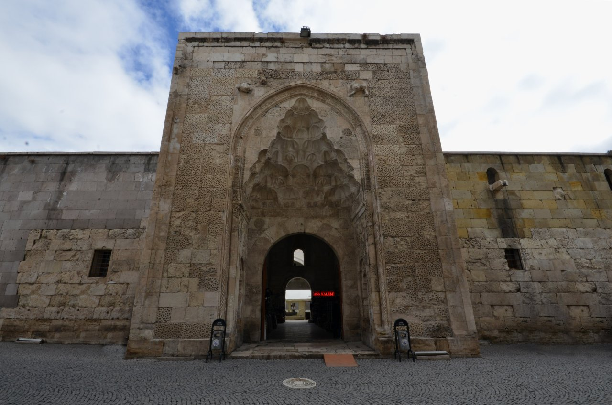
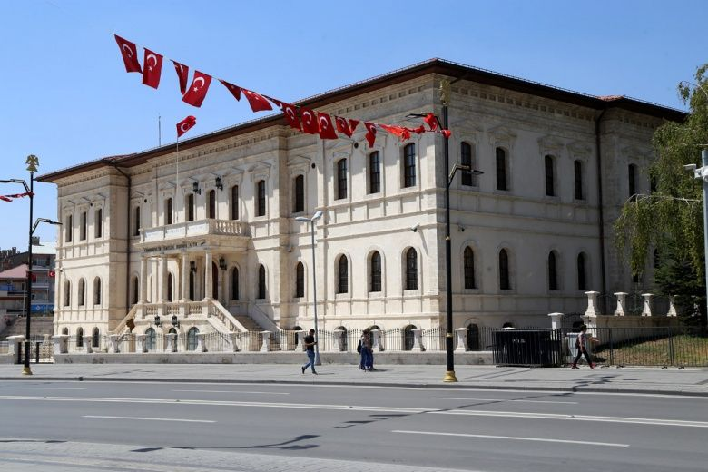
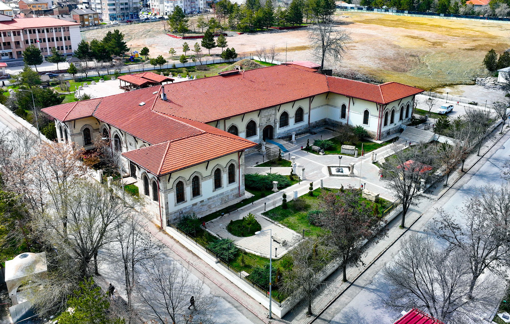
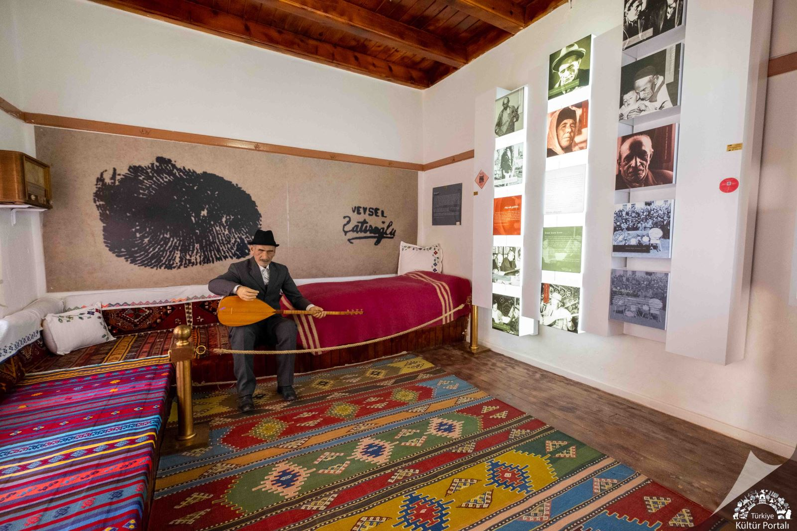

Gök Medrese
Sivas'ın en önemli tarihi eserlerinden biri.

Divriği Ulu Camii
UNESCO Dünya Mirası listesinde yer alan eşsiz yapı.

Şifaiye Medresesi
Selçuklu döneminden kalan tarihi şifahane.

Kongre Müzesi
Sivas Kongresi'nin yapıldığı tarihi bina.

Arkeoloji Müzesi
Sivas'ın zengin tarihini yansıtan önemli bir müze.

Aşık Veysel Müzesi
Ünlü halk ozanı Aşık Veysel'in yaşamını anlatan müze.